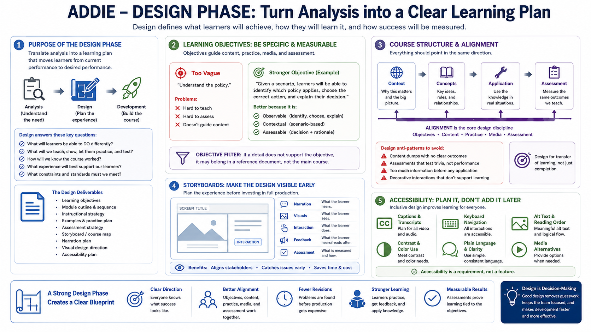

Design - Planning the Learning Experience
Connecting to LMS... Progress: in progress

Narration
The Design phase turns analysis into a learning plan. This is where course creators define learning objectives, performance outcomes, module sequence, instructional strategy, examples, practice opportunities, assessment approach, narration plan, visual direction, and accessibility expectations. The design should explain how the course will help learners move from current performance to desired performance.
Learning objectives should be specific enough to guide development. A vague objective such as understand the policy is hard to teach and hard to assess. A stronger objective describes what learners will be able to identify, choose, apply, compare, perform, or explain. The objective becomes a filter for content: if a detail does not support the objective, it may belong in a reference document instead of the main course.
Course structure matters. Modules should build in a logical order, usually from context to concepts to application. Examples make abstract content concrete. Practice gives learners a chance to use the information before the final assessment. Assessments should measure the same knowledge or decisions the course teaches. Alignment is the core design discipline: objectives, content, practice, media, and assessment should point in the same direction.
Storyboards make the design visible before production becomes expensive. A storyboard can show screen flow, narration, visual ideas, interactions, feedback, and quiz alignment. It gives stakeholders something to review before the team records audio, builds complex interactions, or creates final media. A storyboard is not busywork; it is a way to catch problems while they are still cheap to fix.
Accessibility should be planned here, not added at the end. Decisions about captions, transcripts, keyboard navigation, alt text, reading order, contrast, plain language, and media alternatives all affect design. A strong design phase makes the learner experience clearer before development begins.